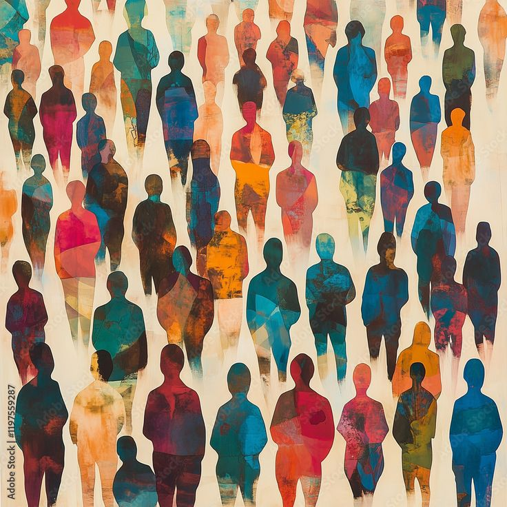

Althea Kabigting, Francis Aldave
Ever notice how from the minute we're born, the world seems to have a predefined "box" waiting for us based on our sex? Blue for boys, pink for girls, "strong and silent" for him, "nurturing and gentle" for her. It's like we're handed a script, not just for a day, but for a lifetime. But here’s the truth that's shaking up the old norms: much of what we call "gender" isn't biological destiny. It's a powerful, invisible force shaped by the very society we live in.
This isn't about denying our bodies; it's about understanding the deep, often unexamined ways that society constructs what gender means. Think about it: the roles we're expected to play, the behaviors considered "appropriate," even the feelings we're "allowed" to express—these aren't universal truths. They're learned, passed down through generations, and reinforced by everything from our families to the media we consume.
Those "traditional gender roles" we often hear about? They're more than just old-fashioned ideas. They're powerful limits. When men are constantly pushed to be "strong, assertive, and dominant," it can mean bottling up emotions, avoiding vulnerability, and missing out on the joys of nurturing. And when women are funneled into roles as "nurturing, passive, and submissive," it can stifle ambition, silence their voices, and deny them leadership opportunities. These boxes don't just feel restrictive; they can genuinely limit individual potential and keep inequality alive and well.
And finally, it's crucial to embrace the full spectrum of gender identity and expression. Our internal sense of self (gender identity) doesn't always align with the sex we were assigned at birth, and how we choose to present ourselves to the world (gender expression) is equally diverse. Recognizing this vast human tapestry is fundamental to building a society that respects every individual's inherent dignity.
Understanding gender as a social construct isn't about tearing things down; it's about rebuilding them on a foundation of fairness and understanding. It's about empowering everyone to live authentically, free from the confines of outdated scripts.